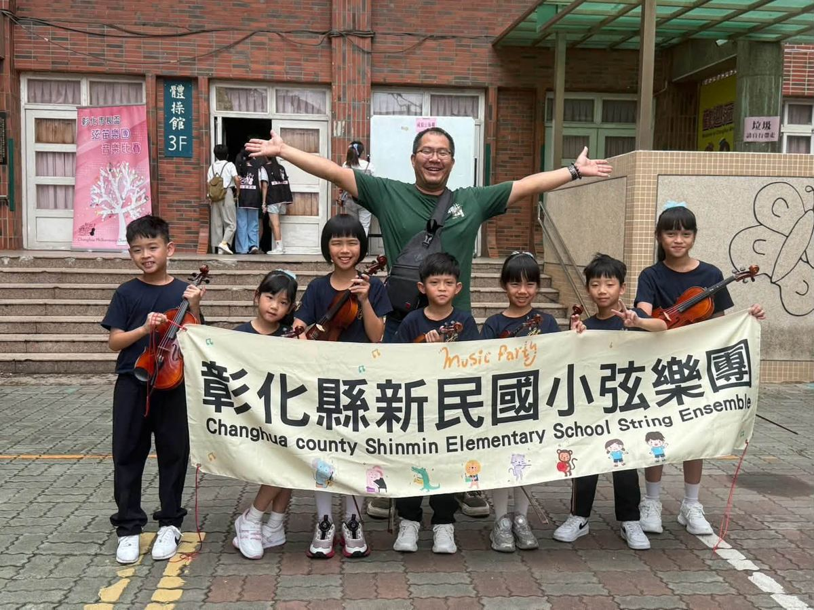
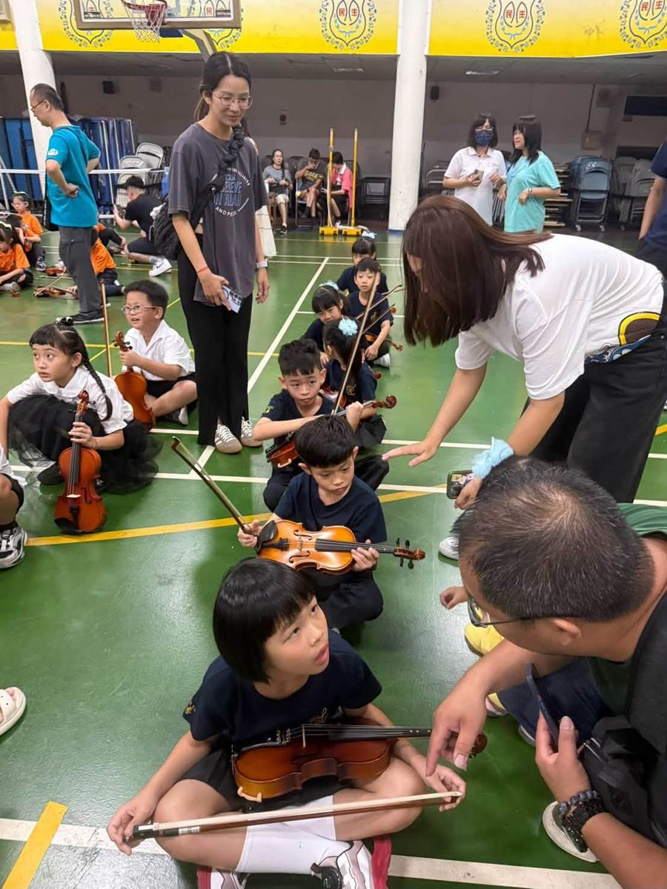

Congratulations to Hsinmin's Strings & Winds Ensemble on winning 2nd place in the Grade 1 A Division at the Mayor's Cup Strings & Winds Ensemble Competition! 🥈
From the very day they learned they'd be competing, this group of children — stepping onto a competition stage for the first time in their lives — worked hard, day after day, all the way to today. Over summer break, while other kids were resting, they picked up their instruments again and again. Beyond their regular group practice, they even kept practicing on weekends, with no days off.



Mayor's Cup Strings & Winds Ensemble Competition
一年級A組 第二名
Since January, from first learning to hold the instrument and draw the bow, to slowly polishing every note, every motion, every posture — through countless repetitions, and right before the competition, their teacher's reminders, one after another: "Draw the bow properly!" "Watch your posture!" "Don't be nervous!" "Remember to listen to each other!" These small reminders were exactly the nourishment that helped the children grow.
Because what we want to teach the children was never just a placement in one competition. It's this: once you decide to do something, give it your full effort; when things get hard, don't give up easily; and know that results never come out of nowhere — they're hidden inside practice after practice after practice.
Today, when the final note fell and the applause rang out, watching the children complete their very first competition, we were so moved we couldn't help but tear up. This "2nd place" carries far more than a ranking — it holds a summer of sweat, the persistence of repeated practice, and every parent who was willing to come along on the weekends.
Thank you for your persistence and hard work, and thank you to every parent who accompanied, supported, and encouraged the children along the way. We are so proud of you all! May you always remember: the days of hard work are never wasted, and the brave selves who stood on that stage are always worth being proud of. ✨
恭喜新民國小114弦笛團榮獲「市長盃弦笛樂團比賽」一年級A組 第二名！
從知道要參加市長盃的那一天開始，這群第一次站上比賽舞台的孩子，就一路認真走到今天。暑假裡，別人放假了，他們一次次拿起琴；除了固定上課團練，週末更是也不休息自主團練。
孩子們相約一起練習，家長們也一路陪伴、接送、等待，只為了讓孩子能在舞台上，把這段日子的努力，好好呈現出來。
今年一月從最初的夾琴、拉弓，到一個音、一個動作、一個姿勢慢慢雕琢；從反覆練習，到比賽前老師一句又一句的叮嚀——「弓要拉好！」「姿勢注意！」「不要緊張！」「記得聽彼此的聲音！」這些看似細小的提醒，其實都是孩子成長的養分。
因為我們想教給孩子的，從來不只是一場比賽的名次。而是當一件事情決定要去做，就願意認真對待；遇到辛苦，不輕易放棄；知道成果不會憑空而來，而是藏在一次又一次的練習裡。
今天，當最後一個音符落下，掌聲響起，看著孩子們完成了第一次的比賽，心裡那份感動，真的忍不住紅了眼眶。當比賽結果公佈，我們都知道這份努力得來不易，這個「第二名」，不只是獎牌上的名次。它裝著的是這個暑假的汗水、反覆練習的堅持、孩子們不喊累的努力，還有每一個週末願意陪著孩子一起來的家長。
114團的孩子們第一次上場，就交出了屬於自己的漂亮成績。謝謝你們的堅持與努力。也謝謝每一位一路陪伴、支持、鼓勵的家長，有你們真好。
今天的第二名，是一份喜悅；更珍貴的，是我們一起走過的這段路。願孩子們記得——努力過的日子不會白費，勇敢站上舞台的自己，永遠值得驕傲。
Tap 🔊 to listen · 點喇叭聽發音
The teacher would remind them to watch their posture.老師會提醒他們注意姿勢。
It's normal to feel nervous before your first competition.第一次比賽前感到緊張是很正常的。
This medal came from months of hard effort.這面獎牌來自好幾個月的辛苦努力。
Good posture helps you play the violin well.良好的姿勢有助於把小提琴拉好。
We were so moved watching the children perform.看著孩子們演出，我們感到非常感動。
Hsinmin is so proud of this ensemble.新民國小以這個樂團為榮。
Match the word to its meaning
把英文和中文配對
Matched 配對成功：0 / 6